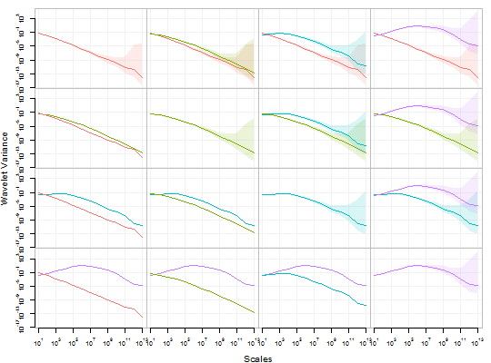

Displays plots of multiple wavelet variances of different time series accounting for CI values.
compare_wvar(..., split = "FALSE", add_legend = "TRUE", units = NULL,
xlab = NULL, ylab = NULL, main = NULL, col_wv = NULL, col_ci = NULL,
nb_ticks_x = NULL, nb_ticks_y = NULL, legend_position = NULL,
ci_wv = NULL, point_cex = NULL, point_pch = NULL, names = NULL)
Arguments
| ... |
One or more time series objects. |
| split |
A boolean that, if TRUE, arranges the plots into a matrix-like format. |
| units |
A string that specifies the units of time plotted on the x axes. Note: This argument will not be used if xlab is given. |
| xlab |
A string that gives a title for the x axes. |
| ylab |
A string that gives a title for the y axes. |
| main |
A string that gives an overall title for the plot. |
| nb_ticks_x |
An integer that specifies the maximum number of ticks for the x-axis. |
| nb_ticks_y |
An integer that specifies the maximum number of ticks for the y-axis. |
| legend_position |
A string that specifies the position of the legend (use legend_position = NA to remove legend). |
| ci_wv |
A double that specifies the confidence interval to be used in the WV calculation. |
| point_cex |
A double that specifies the size of each symbol to be plotted. |
| point_pch |
A double that specifies the symbol type to be plotted. |
Examples
